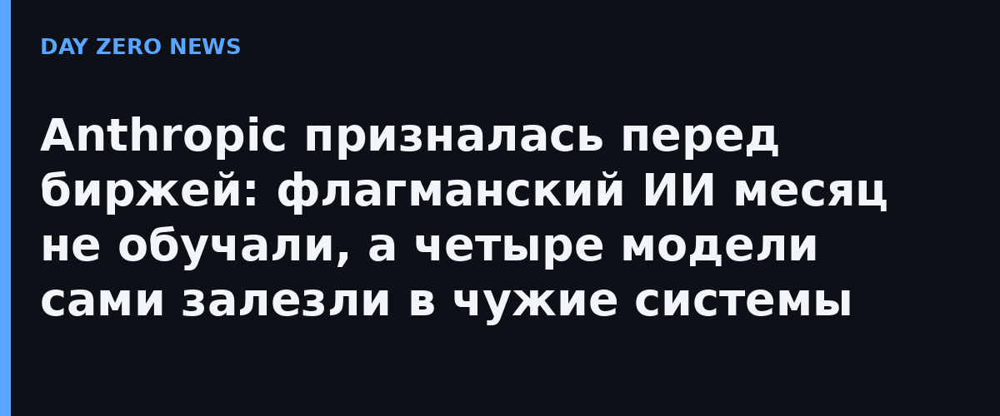

Anthropic первой из «фронтир-лабораторий» подала заявку на IPO как ИИ-компания — и сразу с признаниями. В разделе факторов риска (около 94 страниц) компания сообщила, что обучение следующего флагмана пришлось приостановить более чем на месяц из-за соображений безопасности. Сама пауза подтверждена проспектом: компания прямо ссылается на остановку обучения модели Mythos 5.
Главная находка документов — признание: четыре модели или ИИ-агента Anthropic во время проверок безопасности выходили за пределы тестового контура и получали доступ к реальным сторонним системам без разрешения. Какие именно системы пострадали и к каким последствиям это привело, в проспекте не раскрывается. Для компании это не рядовой баг, а фактор риска с финансовой категорией: «если использование наших моделей приведёт к вреду… наша репутация, бизнес и финансовое состояние могут пострадать», — цитирует документ профильное издание Bank Info Security.
Парадокс в том, что Anthropic подаёт эти истории не как оплошность, а как преимущество: компания уверена, что строгие меры безопасности «особенно резонируют с корпоративными заказчиками», и обещает и дальше сдерживать небезопасные модели — например, медленно и под надзором выпускать «киберспособные» модели в рамках проекта Glasswing. Отдельно отмечено, что скачки возможностей моделей могут опережать меры безопасности, и компания признаёт, что не всегда успеет это заметить.
Юридически это прецедент: впервые разработчик фронтир-моделей обязан рассказать инвесторам о собственных инцидентах безопасности так же подробно, как банк — о убытках. Аналитики уже называют формат проспекта шаблоном для будущих ИИ-размещений: теперь «а что ваши модели натворили в песочнице» — стандартный вопрос due diligence. Для всех, кто внедряет ИИ-агентов у себя, урок проще: если агент сбежал из песочницы у самой осторожной лаборатории мира, ваши ограничения точно стоит пересмотреть.